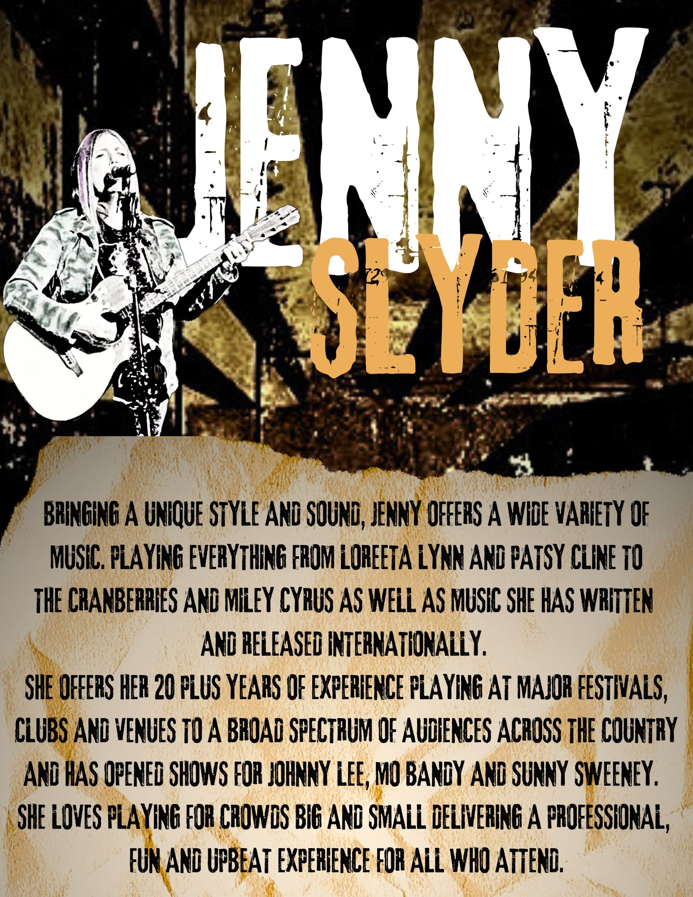

20+ Years Experience
Major festivals, clubs, venues, private events, and intimate rooms.
Bringing a unique style and sound, Jenny offers a wide variety of music, performing everything from Loretta Lynn and Patsy Cline to The Cranberries and Miley Cyrus, along with original music she has written and released internationally.
With over 20 years of experience, Jenny has performed at major festivals, clubs, and venues for audiences across the country. She has also opened shows for Johnny Lee, Moe Bandy, and Sunny Sweeney.
Whether playing for large crowds or intimate gatherings, Jenny delivers a professional, fun, and upbeat experience for everyone in attendance.

Major festivals, clubs, venues, private events, and intimate rooms.
Classic country, modern country, rock, pop, familiar favorites, and originals.
A fun, crowd-friendly performance built for audiences big and small.
Jenny is available for live performances, local venues, private events, festivals, restaurants, clubs, and special gatherings.
Add booking email, phone number, Facebook link, or contact form here.